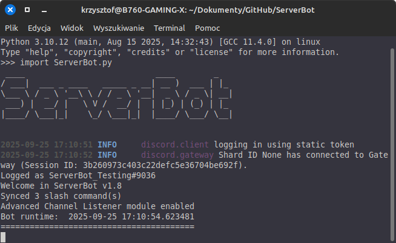

ServerBot User Manual
ServerBot - Bot Discordowy rozwijany przez Kamile320 umożliwiający:
- Słuchanie lokalnej muzyki z hosta
- Tworzenie wątków
- Administracja Serwera
- Zarządzanie Komputerem Hosta (+ Diagnoza)
- Zarządzanie Plikami i Katalogami
- Wiele więcej
Spis Treści
Struktura Katalogowa:
- ServerBot.py - Główny plik skryptu
- setup.bat - Plik instalujący wymagane biblioteki pythona (Windows)
- setup.sh - Menu operacyjne: uruchamianie bota, instalowanie wymaganych biblioteki itp. (wymaga zainstalowania komendy "dialog")
- Logs.txt - Plik z Dziennikiem zdarzeń bota na serwerze
- manual.html - Manual Bota
- Media - Katalog z Domyślnymi Muzykami/Dźwiękami
- sctl - Katalog z wpisami usług (po użyciu .service prepare)
- .env - Specialny plik do przechowywania Tokenów Bota
-
Files - Katalog z wymaganymi (i nie) plikami Bota
- favicon.ico - Ikona tego Manuala
- updates.txt - Plik z listą ostatnich aktualizacji
- Logs.txt - Kopia Logów Bota
- autorun.sh - Po użyciu .mksysctlstart
- Inne Pliki (zdjęcia, nagrania, itp.)
- setup - Pliki konfiguracyjne
- setuplib.sh - Instalacja Bibliotek
- mkvenv.sh - Utworzenie venv
Zdj.1 - Uruchomienie skryptu
Pierwsze uruchomienie:
Bot do uruchomienia wymaga:
- Python 3.10 lub nowszy
- Połączenie z internetem
- Zainstalowane wymagane biblioteki pythona (patrz - zawartość setup.sh/setuplib.sh)
- Dodanie do środowiska PATH plików FFmpeg - Tylko Windows (zobacz YT)
- System Operacyjny Linux(rekomendowany) / Windows / MacOS - Najlepiej 64bit
- setup.sh - wymaga komendy "dialog"
Należy poprzez IDE, terminal albo inny program uruchomić Skrypt,
jeżeli coś pójdzie nie tak, Bot powinien dać znać w czym problem
i poprosić o zatwierdzenie wykonania korekty albo porzuci uruchomienie/instalację
Aktualne Komendy Bota można zobaczyć używając komendy .help
Uruchamianie Automatyczne:
Korzystając z Bota może zechcesz aby automatycznie uruchamiał się wraz z systemem operacyjnym (Linux).Aby to łatwo umożliwić istnieje komenda .mksysctlstart
Po wpisaniu komendy trzeba podać dodatkową wartość:
none -> tworzy zwykły plik autorun.sh w katalogu Files. Działa głównie na systemach opartych na Ubuntu 22.04
inna wartość -> czasem przy instalacji modułów za pomocą pip3 może wyskoczyć błąd externally managed pip.
W tym przypadku zamiast none należy wpisać katalog w którym znajduje się Wirtualne Środowisko Pythona (Virtual Environment/Venv)
Jeśli jeszcze go nie utworzyłeś - rekomendowane jest utworzenie go w głównym katalogu Bota (ServerBot)
Przykład: .mksysctl .venv/bin/python <- wykonujesz tą komendę na Discordzie gdy skrypt działa w głównym katalogu Bota
.venv - > znajduje się w katalogu ServerBot
UWAGA! Bot (a raczej setup.sh) jest przystosowany do nazwy katalogu z wirtualnym środowiskiem o nazwie ".venv".
Jeśli wprowadzisz inną wartość, bot może się nie uruchomić!
Zalecane jest użycie opcji 4 z setup.sh -> Bez problemu wszystko zainstaluje i skonfiguruje jak trzeba.
Aby autostart zadziałał, należy ustawić pliki bota z uprawnieniami odczytu/zapisu/wykonania na 777 (dla wszystkich). Rekomenduję przenieść pliki Bota do katalogu /ServerBot (żeby nie był w innych katalogach)
Jak utworzyć venv:
- znajdując się w głównym katalogu bota wpisz: python3 -m venv .venv
- aby aktywować venv: source .venv/bin/activate (jako root)
- sprawdź wersję i lokalizację: which python
- gdy już jesteś w venv, uruchom setup.sh
- aby wyjść z venv wpisz w termianalu: deactivate
- albo prościej - użyj opcji 4 w setup.sh
Pełna dokuntacja tutaj
Zdj. 2 - opcje setup.sh

Tokeny
Bot korzysta z tokenów: Discorda API, ApenAI oraz z ID użytkowników.Aby bot się uruchomił należy wypełnić odpowiednimi danymi plik .env
Schemat:
TOKEN="twój token"
OpenAI="twój token"
admin_usr = ['twoje ID']
ID użytkownika
Niektóre komendy wymagają uprawnień administratora do uruchomieniaAby je wykonać, należy podać w admin_usr ID uprawnionuch użytkowników do wykonywania tych komend.
Podstawowe Komendy:
|
=====Chat===== hello bye hi hello_there |
====Utility_and_Diagnostics==== testos {os} test bytes delete cleaner binary {dec. number} hexa {dec. number} convert rebuild bash |
=======Fun======= random banner blankthing apple |
=====Admin===== ShutDown copylog addbot testbot gpt kick ban unban mkshortcut mksysctlstart service |
|
====BotInfo==== manual credits time ping pingip {IPv4 address} |
========FileManager======== cd {directory} dir {mode} file {mode} {filename} touch {file} {content} |
====VoiceChannel==== join leave play stop waiting micspam pause |
====UpdateInfo==== newest_update next_update |